Five fashion transformations, shown from their visual references to the final
AI-generated result. From a four-image royal composition to outfit and pose transfer.
Every case study shows the images used as visual guidance, followed by the finished AI result. No
comparison sliders — the full creative process is visible at a glance.
01 / FOUR-IMAGE COMPOSITION
Royal Palace Elegance
Four independent references are combined into a single fashion scene: facial identity, ruby-red
evening gown, silver handbag and gemstone tiara. A new pose and palace staircase complete the
composition.
INPUT REFERENCES04 IMAGES
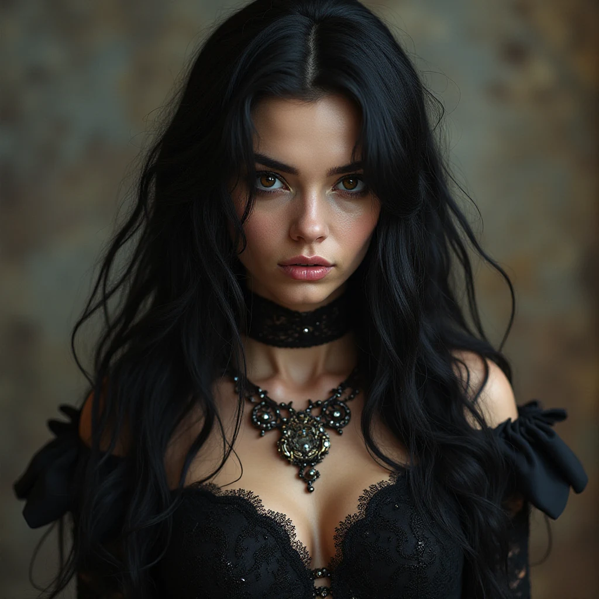
01 · Identity / Face
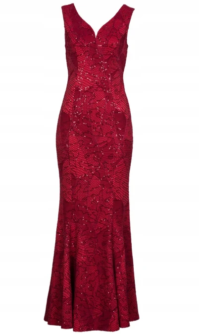
02 · Evening Gown
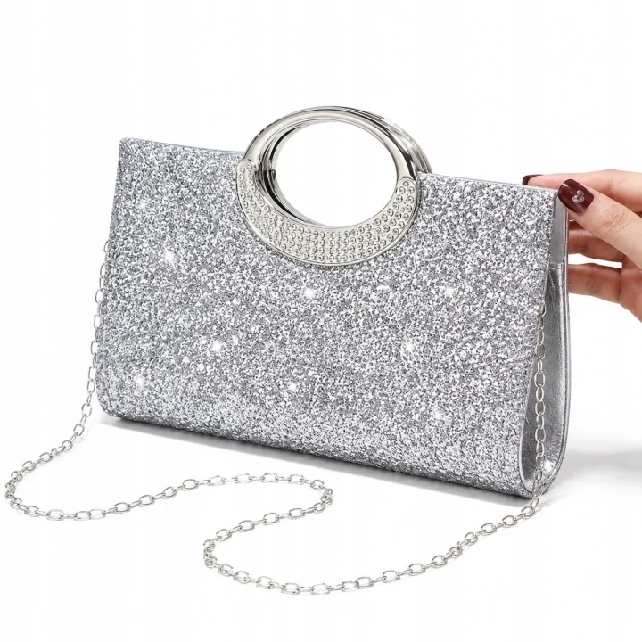
03 · Silver Handbag
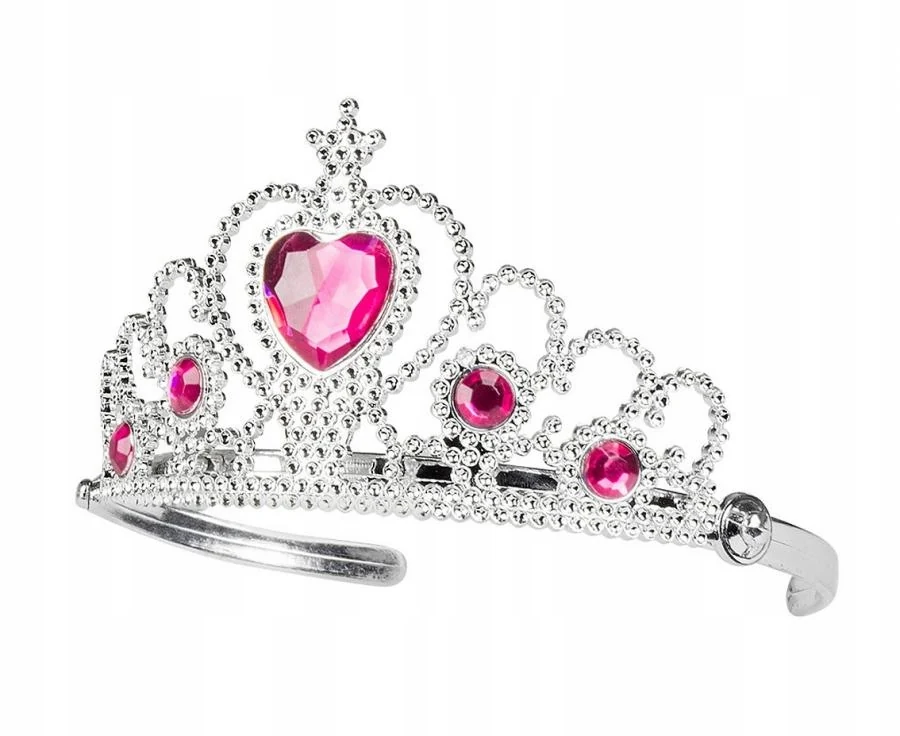
04 · Gemstone Tiara
↓ COMFYUI · AI IMAGE EDIT ↓
FINAL AI RESULTOUTPUT
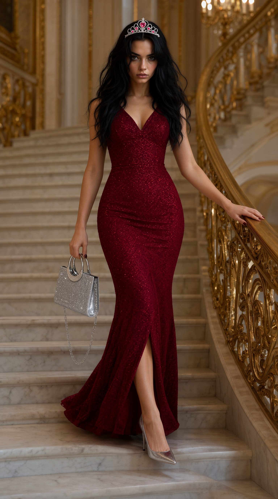
Royal Palace Elegance · AI-generated image
02 / VIRTUAL TRY-ON
Burgundy Three-Piece Suit
The original portrait and a tailored burgundy suit reference guide the outfit replacement, while
preserving the recognizable face and office setting.
INPUT REFERENCES02 IMAGES
Original Portrait
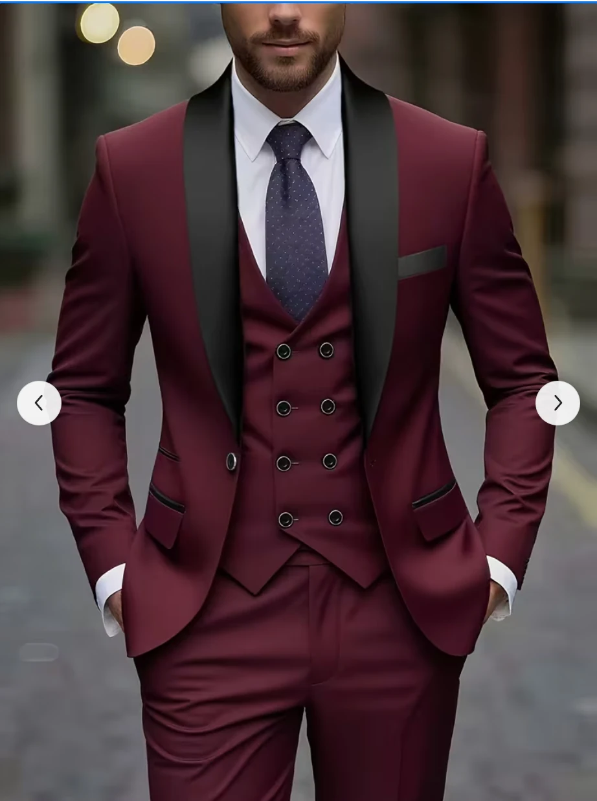
Suit Reference
↓ COMFYUI · AI IMAGE EDIT ↓
FINAL AI RESULTOUTPUT
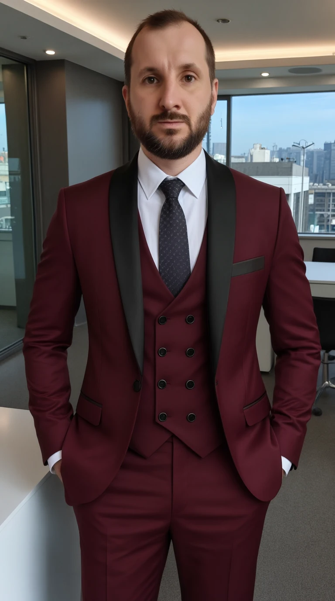
Burgundy Three-Piece Suit · AI-generated image
03 / VIRTUAL TRY-ON
Military Combat Uniform
A tactical uniform reference provides the combat shirt, camouflage sleeves and trousers for the
same subject.
INPUT REFERENCES02 IMAGES
Original Portrait
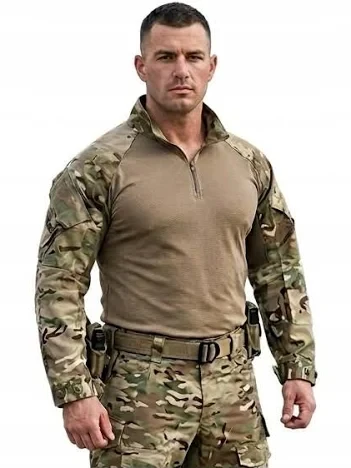
Uniform Reference
↓ COMFYUI · AI IMAGE EDIT ↓
FINAL AI RESULTOUTPUT
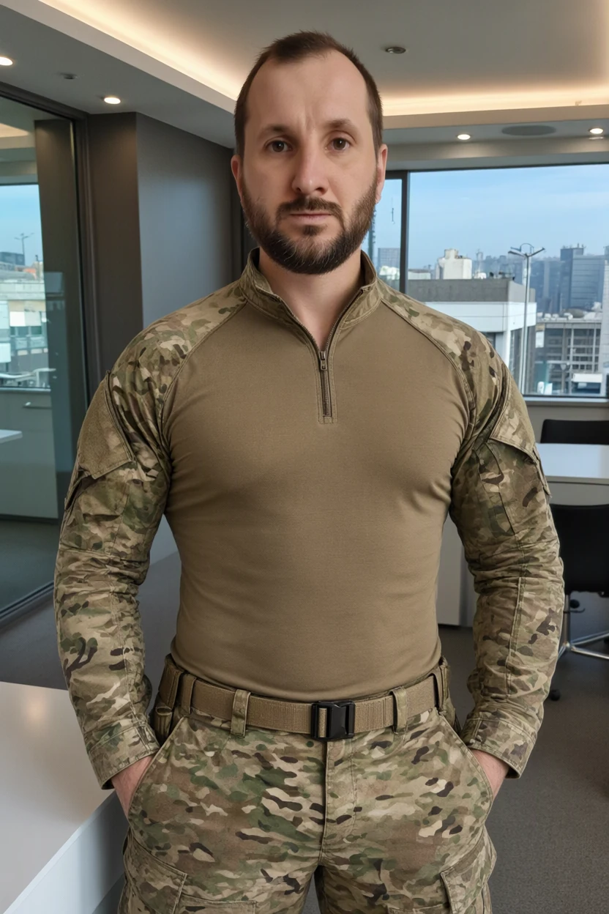
Military Combat Uniform · AI-generated image
04 / COSTUME TRANSFER
Aristocratic Vampire
A detailed gothic costume reference supplies the embroidered waistcoat, ruffled shirt, cape and
high collar.
INPUT REFERENCES02 IMAGES
Original Portrait
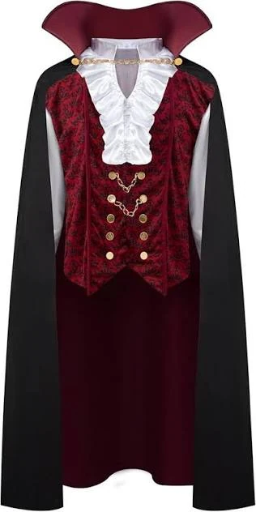
Costume Reference
↓ COMFYUI · AI IMAGE EDIT ↓
FINAL AI RESULTOUTPUT
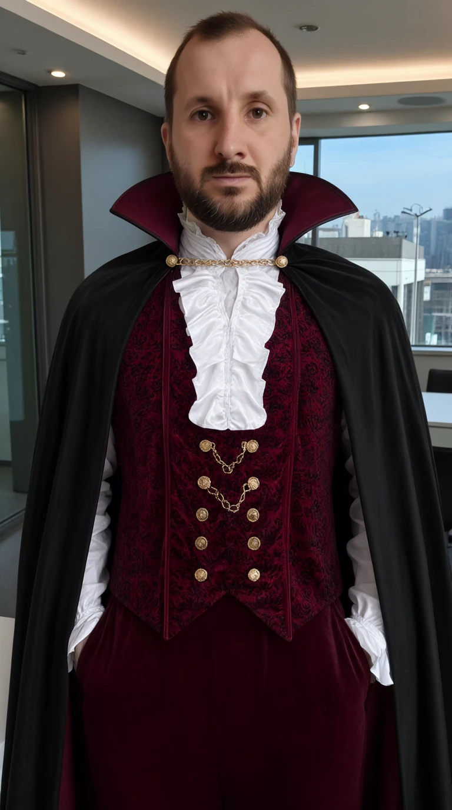
Aristocratic Vampire · AI-generated image
05 / OUTFIT + POSE TRANSFER
Golden-Era Hip-Hop
A single reference guides both the metallic gold outfit and a full-body rapper pose,
reconstructed from the original portrait.
INPUT REFERENCES02 IMAGES
Original Portrait
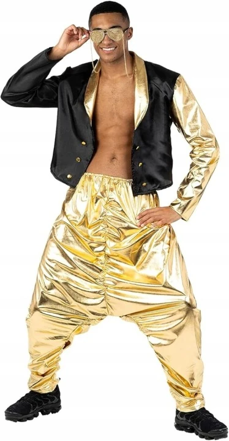
Outfit & Pose Reference
↓ COMFYUI · AI IMAGE EDIT ↓
FINAL AI RESULTOUTPUT
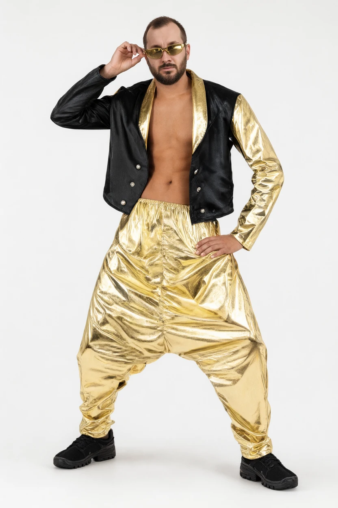
Golden-Era Hip-Hop · AI-generated image
THE PROCESS
Reference-led creative control
These experiments explore combining multiple image inputs, transferring outfits and reconstructing
poses in ComfyUI. Reference images guide appearance and composition; generated results are AI
interpretations, not photographs of physically worn clothing.